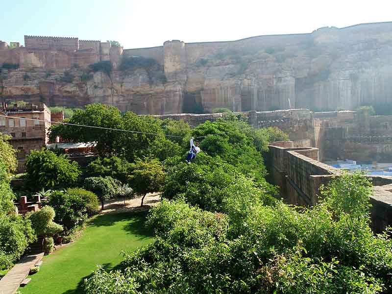

<html></html>
<head>
  <link rel="stylesheet" href="dist/assets/styles/wat_pho.css"/>
  <link rel="stylesheet" href="dist/assets/styles/main.css"/>
  <link href="https://fonts.googleapis.com/css?family=Roboto+Slab|Josefin+Sans" rel="stylesheet" type="text/css"/>
  <title>Mehrangarh Fort</title>
</head>
<body>
  <section class="wat_pho clear">
    <div class="content">
      <h2>Mehrangarh Fort, Rajasthan India
        <p><a href="souvenirs.html">Back</a></p>
      </h2>
    </div>
    <p>
      What architecture brings to us is somewhat explainable. How it influences you is further unrecognised.<br>

      <br>
Each piece of architecture has its own individuality. Some leave an after effect on you with its unimaginable grandeur or intricate beauty. Psychology states colour influences our personal life. So doesn't architecture? Sometimes it lets something change in you in a way you were never before. It makes you free, it makes you wonder, it takes you to places you've never been before, it makes you question when you were incapable of questioning, it influences you in the most beautiful way, but only if you let it. How many of us actually take time in our day to day busy lives to admire a structure? How many of us actually are mesmerised by a historical artifact while viewing it- most, but how many of us have actually have looked it at the way we did in presence- only few.<br> 
As aspiring architects, we were capable of admiring what each city had in store for us. But would we be able to take that back with us on return? Let's find out.<br>
Talking about 500 year old Mehrangarh fort, it is a well known fact that it is one of the largest fort in India, foreclosed by 7 gates. It is situated 400 feet above the city and is enclosed by imposing thick walls. Inside its boundaries, there are several palaces known for their intricate carvings and expansive courtyards. The imprints of cannonball hits by attacking armies of Jaipur can still be seen on the second gate.<br>
      </p>
    <p>
      What's more exciting about the fort is the opportunity of ziplining across various extended parts of the fort, while admiring the fort and the blue city on either sides of the zip. Now that's just a basic description. Each of the ziplines (6) have something different to offer to you.<br> 
<i>(Zip 1 : Chokelao Challenge (115 m) glides over lush, green Chokelao garden, with great views of the blue city.<br></i>
<i>Zip 2: Ranisar Rollercoaster (170 m) launches off a battlement, accessed through a secret  tunnel, and flies high over Ranisar Lake.<br></i>
<i>Zip 3: Chhota Wallah (70m) is short but sweet, crossing a deep rocky ravine at the head of the lake.<br></i>
<i>Zip 4: Jai Jodha (270 m) is superb long zipline, buzzing the ridges and flying deep into the heart of Rao Jodha park.<br></i>
<i>Zip 5: Rajput's Revenge (160m) launches from a rocky mountain top with glorious views of Mehrangarh.<br></i>
<i>Zip 6: The Magnificent Marwar (300m) is one of Flying Fox's most spectacular and iconic zip lines, flying over not one but two lakes and landing at the tip of a fortified tower rearing 30 metres out of Ranisar Lake.)*<br></i>
<br></p>
    </p>
    <p>
      Now what's been said about the ziplines is not enough to explain the experience altogether. We look forward to new experiences. We look forward to be brave. We look forward to fight against our personal fears in our daily lives and this makes it all possible for a lot of people. Now there are always going to be those  who are too scared to let go of their life's rigidity and actually break free and allow themselves to  free flow in nature, but if you can gather that minimum courage and break the ice, it is one of the best experiences one can keep along with them in their life.<br>
The act of ziplining does not only gives you the opportunity of fighting your fears or the satisfaction of trying an adventure sport. Why it is so important to try do something like this once is because along with every obvious thing it has to offer, it also gives you time to do something which we rarely do anymore- it gives us the time to think! <br>
Whether it is about the regular things that we do, while admiring everything around them, one can't help but wonder about the questions we ask ourselves each day and from up there, what is before us is a whole new perspective, quite literally speaking. From each of, let's say, nature's artifacts, a parallel question will float in your mind while you're on the zip. Whether it's the tiny road that connects the fort with the city, the blueness of the city down below, the dried up lake or that dark and extremely sinister looking well, you're bound to be pouring with questions. To make the best of this experience, a brave heart, an open and optimistic mind is further suggested and you'll be getting back more than you're paying for, in return. <br>
           
    </p>
    <p>
     Post the filmy dreamy sequence i.e.  Ziplining experience: one might fear that the fort will let you down, but instead against all odds, it fights back with its uniqueness and grandness and successfully manages to enhance your previous experience for this time the fort is up, close and personal. Yes, after the gliding in the wind, the climb up to the courtyard feels like quite a bit of work but one doesn't just leave Mehrangarh Fort with regrets of not seeing it from within. Even with time constraints, we managed to make the climb, agonising while fighting against gravity, with minimal stops to capture some memories back or selfies or groupfies, as we call them now. The fort was like any other fort in Rajasthan by being unlike anything we've ever seen before.<br> 
By this time, we were already running out of adjectives to describe what we saw and what was scarier was that we had 5 more cities to visit. The fort did what it was meant for. It left an impression. Soon our bus rolled off the rocky cliff off on the road, we on our way to Jaisalmer. 37 people; 2 beautiful cities; 4 forts; momentarily we were already making memories but if we were going to hold onto that experience or let go off of it was the question in the bigger picture.<br>
*Source: Flying Fox India.
      <br>
      
    </p>
<p style="text-align:right"><a href="https://www.facebook.com/ar.namrata">-Namrata Goswami</a></p>
<a href="index.html">
      <button>back to home</button></a>
  </section>
  <section id="footer" class="footer clear">
    <center>
      <div class="content clear">
        <div class="content-1">
          <p><span>WALK</span> <br> 4B/28, 2nd Floor, Tilak Nagar, New Delhi, Delhi 110018.
            <!--a(href='support.html') read more &#10140;-->
          </p>
        </div>
        <div class="content-2">
          <div class="content-2-1">
            <p><span>TALK</span><br> the.rovers@outlook.com</p>
          </div>
          <div class="content-2-2">
            <p><span>STALK</span>
              <ul id="social_icons">
                <li><a href="https://facebook.com/rover.org"></a></li>
                <li><a href="https://www.youtube.com/channel/UCAH9TX_LhImPk9YEKKjf26A"></a></li>
                <li><a href="https://instagram.com/the.rovers"></a></li>
                <li><a href="https://twitter.com/rovers_org"></a></li>
                <li><a href="https://plus.google.com/u/0/b/100252120756478981295/100252120756478981295/about"></a></li>
                <li><a href="http://issuu.com/therovers"></a></li>
              </ul>
            </p>
          </div>
        </div>
      </div>
      <p class="rightpara">copyrights@2015 rovers.org.in</p>
    </center>
  </section>
</body>